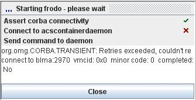

| |
ALMA Common Software
Documentation |
|
acscommandcenter"
in your (Linux) shell-r | -retrieve | --retrieve
PROJECTFILE -g | -geometry | --geometry
WIDTHxHEIGHT+XPOS+YPOS -x | -noexit |
--noexit PROJECTFILE corbaloc::HOST:PORT/ManagerHOST:INSTANCE |
|
| Figure A: Simple Deployment
Scenario A |
Figure B: Complex Deployment
Scenario B |
 |
| Figure C - There and back again...
in 7 steps |
Common Settings
(1).Acs Instance to use (2,
see Acs Instance in the
glossary).$ACS_CDB and $ACSDATA.
If
these variables aren't set (for instance because you are running on
Windows), you can manually enter the desired Cdb into the "Cdb
Root Dir" field in the Common Settings section.The output of
any Acs-related
action you
trigger can be viewed in its own tab in the log area (L, see Log Area in
the glossary for more information).
If all goes well, there's no need to pay much attention to these logs.
java,
then
press play
to start the Container (5).Note: The Container name you specify here is used by the Manager to associate components with the Container. It must therefore be the same as the name specified in the Cdb for the component(s) you're interested in working with. For C++, this traditionally is bilboContainer, for Java frodoContainer, and for Python aragornContainer.
Note: There's an asymmetry in the behavior of starting the Acs Suite and stopping the Acs Suite: The first starts the Services and the Manager, the latter stops the Services, the Manager plus the Containers on your local host.
.bash_profile, a remote
command sources only .bashrc. This may mean the command doesn't find the environment it needs to run..bash_profile as a symbolic link to .bashrc..bash_profile (directly, and by sourcing the Acs bash profile), Acs Command Center will explicitly
source your .bash_profile before running a command through ssh..bashrc will be sourced first, then .bash_profile,
which may again source .bashrc.Common Settings
(1), then select the corresponding entry underneath.Common Settings (1). As for the local
variant, you should
specify an Acs Instance (2).
Common Settings. Start the
Services and the
Manager
as described before by pressing the Acs Suite's play button (3).Common Settings
section,
in the Containers section, etc.) can be
stored as a Project.
Projects are a neat thing that can save you a lot of typing. Their
usage should be self-explanatory, simply use the Project
menu to create, store, and load projects.Note: Any passwords you enter as part of user credentials will not be saved when you store a project. You will have to reenter them the next time you use the project.
Common Settings
without
further interaction required (still some tools might ask for additional
configuration when you launch them). If you are not satisfied with the
default settings, a custom
configuration for the tools can be defined in the Configure Tools...
dialog.AcsCommandCenterTools.xml
that AcsCommandCenter reads in on startup.
These definitions can be re-read at run-time. This is done through Expert -> Tools Menu
->
Replace...
which brings up a file-search dialog to point to a new definition file.
The default definition file contains quite exhaustive documentation in
case you'd like to copy and accommodate it.|  |
| Figure E - Progress Panel
indicating that a daemon is not running |
 |
| Figure F - Deployment Info View
with a manually
added Manager |
| |
| Figure G - Log Area showing the
console output
of started processes |